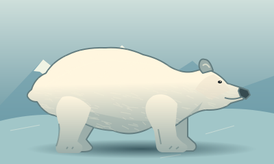
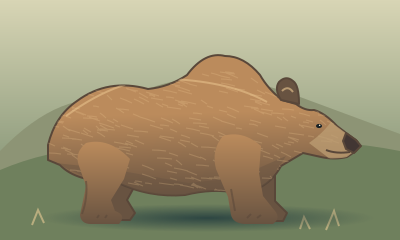
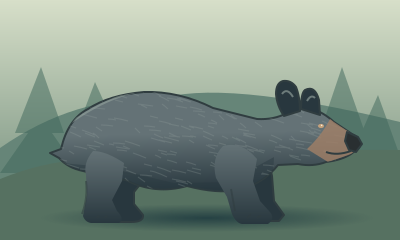
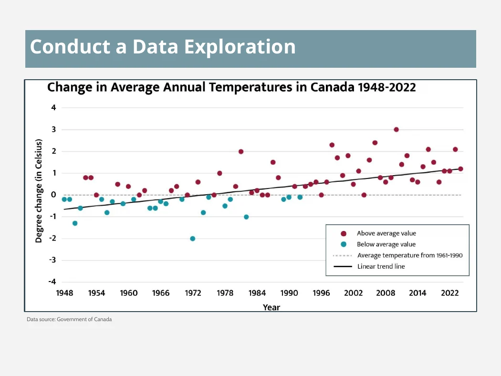

Unit 5 · Lesson 1
Three Bears in Wapusk
What do changing habitats mean for Arctic bear populations?
Wapusk National Park is on the traditional lands of the Cree and Métis. Use the evidence to build an initial idea, not a final answer.
Shared device? Choose Switch student if the name above isn’t yours.
No work saved yet.
Where were the bears reported?
Continue without video: Use the sightings map below. Compare winter and summer markers and note where reports overlap and what the reports do not establish.
Opening field footage · OpenSciEd
Open on YouTube if your school blocks the playerToggle seasons and select an evidence marker. The interactive diagram summarizes habitat patterns, not exact locations.
△ Polar bear · ◆ Brown bear (grizzly) · ⬟ Black bear · ↗ Movement evidence · ◎ Shared location · ? No reported sightings of other species. Markers summarize patterns, not counts or exact coordinates.
Compare the three bear profiles



The drawings are not to scale. Brown and black bears can overlap in fur color. Look at their shapes instead. Bear identification (National Park Service)
Inspect the original Bear Sightings maps
OpenSciEd Bear Sightings (CC BY-NC 4.0). Open the original PDF if it doesn’t display above.
What changes at different scales?
Inspect the original data visuals. Choose a source, look for a pattern, and name the space and time scales it represents.

Arctic annual minimum sea-ice extent, 1987–2023
Each point is the lowest five-day average of the year. Extent counts ocean grid cells with at least 15% ice cover. The satellite record began earlier, but this series starts in 1987, when daily readings became available.
Area and extent are different. The Lesson 6 Futures graph plots September sea-ice area, the ice-covered share of qualifying cells, and includes projections. This graph plots observed annual minimum extent, the whole area of cells with at least 15% ice. Don’t compare their values directly. See NSIDC’s comparison.
See the exact data by year
| Year | Date | Extent |
|---|
Source: NSIDC Sea Ice Index v4, annual five-day minima calculated from the NSIDC data. NSIDC’s finalized 2023 value is 4.26 million km², about 4.3 million km².
Continue without video: Compare years using the minimum-extent chart or exact data table above. Extent is not the same measurement as ice area in the animation.
Optional NASA animation, 1979–2022: it shows ice area, not the extent plotted above. Area counts only the ice-covered share of each cell.
NASA source and accessible downloadsFigures reproduced from OpenSciEd Lesson 1 Data Exploration (CC BY-NC 4.0). Original figure credits remain on the slides.
One region first, then compare
Choose your group’s ice region. Use the annual ice pattern and evidence about polar bear populations to prepare a contribution to the original fishbowl discussion. Use the class’s Inuvialuit observations as a separate source of evidence, with their place and context intact.
Continue without video: Choose an ice region above and read its ice pattern and 2018 evidence. Compare a second region and note where information is missing.
Regional briefing · Polar Bears International
Open on YouTube if neededMake two initial models
Use pictures, arrows, or words on your group’s chart paper. Record the reasoning here so you can compare ideas during the gallery walk. Think about how changes in sea ice could change access to food and interactions among bears.
Model A
Model B
Other report formats: HTML or JSON
Both files contain only this activity and include the name and period shown above. The HTML file opens without an internet connection.